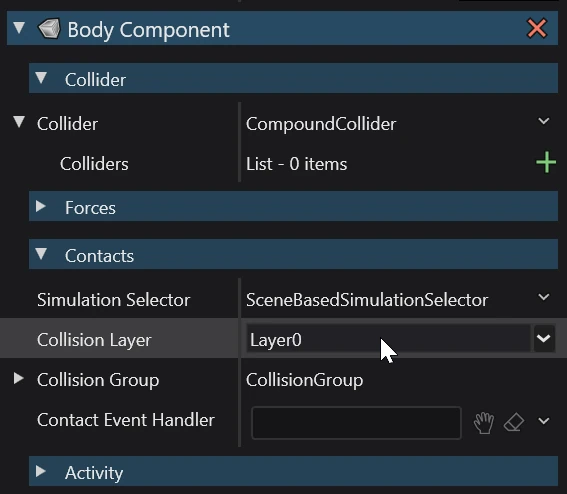

Physics queries
Intermediate Programmer
Physics Queries are a set of operations to test and retrieve physics object in a given simulation. The most well known form of those queries is the RayCast which traces an invisible line through the scene to find intersecting Collidables.
Note
Physics queries use collider shapes to find objects. They ignore entities that have no Collidable Component attached or no collider shape set, see Collidables.
Query types
- Raycast - fires a ray from a point in a direction and retrieves the object(s) it hits.
- Sweepcast - fires a shape in a direction and retrieves the object(s) it hits.
- Overlap - retrieves the objects that overlap an area.
Querying specific collision masks
Collidables are organized into layers, which can be used for filtering collisions in queries.

By default, every query checks all layers. This can be changed by specifying a collision mask.
var mask = CollisionMask.Layer3;
var isHit = simulation.RayCast(Vector3.ZERO, -Vector3.UnitY, 3f, out var hit, mask);
You can create a mask for multiple layers, using bitwise and shift operators.
// | combines multiple masks into one
// mask1 contains layer1 and layer2
var mask1 = CollisionMask.Layer1 | CollisionMask.Layer2;
// ^ removes a value from a mask
// mask2 contains every layer except layer3
var mask2 = CollisionMask.Everything ^ CollisionMask.Layer3;
// ~ inverts a mask
// mask3 contains every layer not in mask2 (only layer3)
var mask3 = ~mask2;